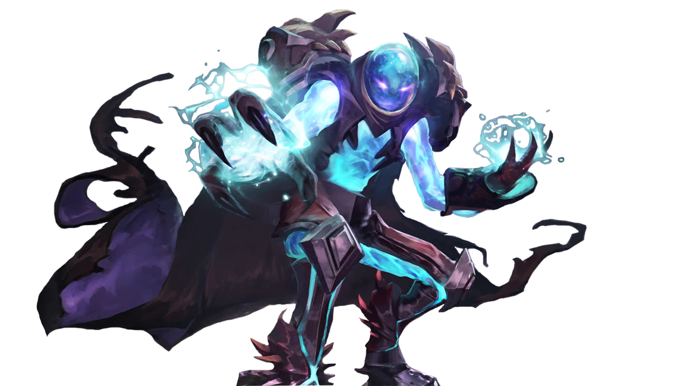
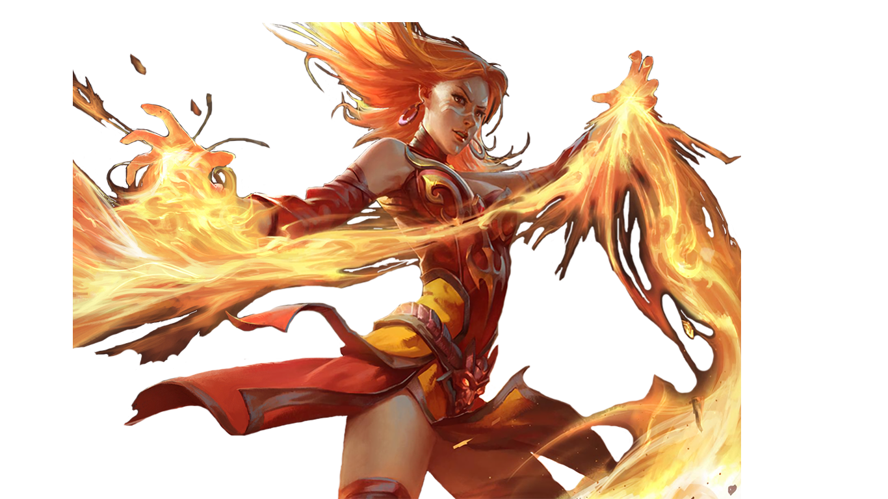
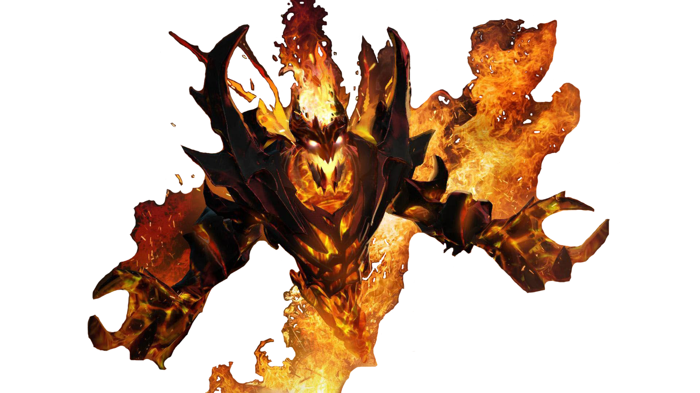
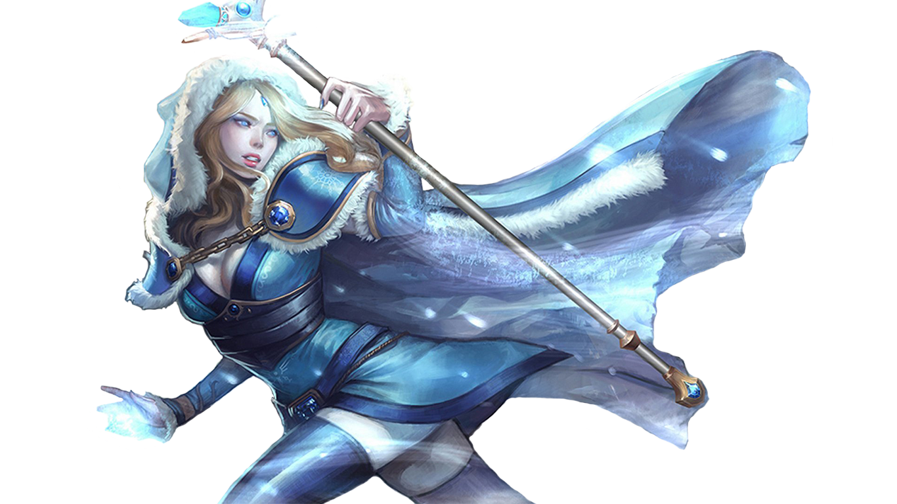
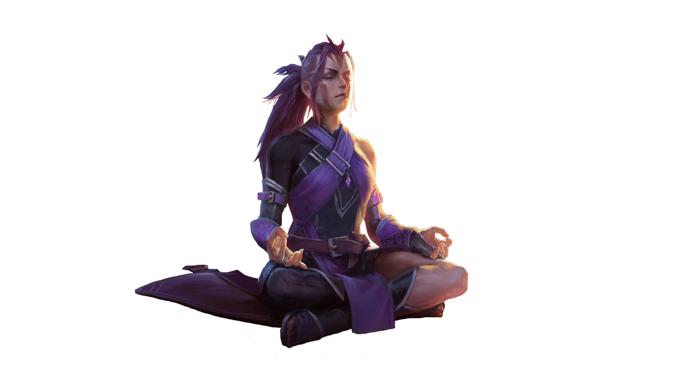

Arc Warden - неплохой герой в плане защиты. Умеет оставлять неприятные для врагов ловушку в виде призрака,
который срабатывает при приближении врага и наносит ему урон. Также герой с помощью своей способности сферы
способен уклоняться от всех физических атак врагов. Если враг находится на поле боя один на один, то Arc Warden
способен нанести ему серьезный урон. Ульт героя зависит от хорошего контроля. Игроку предстоит управлять
сразу двумя Arc Wardenами. То есть ульт героя создает клона, который способен применять все способности
нашего героя. Герой подходит на роль Стойкость, Поддержка и Лес.

Lina - героиня которая неплоха в ближнем и дальнем бою. Она умеет оглушать сразу несколько врагов с помощью
своей способности который срабатывает внезапно спустя несколько секунд. Также Lina способна улучшить свои
скорости в атаке и передвижения, при каждом использовании любых из способностей. У героя есть отличная
способность которая наносит урон врагам по прямой линии. Ульт героя очень опасен для любого врага, способность
срабатывает только на одну цель, но взамен наносит врагу огромный урон. Герой подходит на роль Быстрый урон, Инициатор и Керри.

Shadow Fiend - самый пиковый герой. Мне часто попадался этот герой в игре как враг или союзник. Герой внешне
очень похож на призрака который состоит только из тени. Shadow Fiend умеет нанести врагам огромный урон с помощью
своих способностей которые схожи друг с другом. То есть у героя есть три способности которые являються одинаковыми.
Герой способен складывать эффект, увеличивающий урон от этих одинаковых способностей. Ульт героя тоже наносит огромный
урон и пугает всех врагов на несколько секунд, которые находяться рядом с Shadow Fiendом. Герой подходит на роль Быстрый урон,
Инициатор и Керри.

Crystal Maiden - героиня лучшая в плане оглушения и замедления врагов. Она способна заморозить врага на несколько
секунд и нанести ему периодический урон. Также Crystal Maiden способна улучшить восстановление маны всем своим героям
союзникам. У героя есть отличная способность которая наносит урон и замедляет врагов. Ульт наносит периодический урон
всем окружающим врагам вокруг нашего героя, способность сильно зависит от контроля своего владельца, то есть способность прерываемо.
Герой подходит на роль Поддержка, Стойкость и Контроль.

Antimage - есть две версии внешности героя, одна из них девушка ученица антимага, а другой сам антимаг, но это никак не влияет
на способности и силы героев, то есть у обоих сторон одинаковые способности. Antimage способен красть ману у врага при
каждой физической атаке. Также герой умеет прыгать на небольшое расстояние. У героя есть способность уменьшающий урон от магических
атак, еще при активации создает мощный щит который отражает почти все заклинания против самого врага. Ульт героя наносит урон
в зависимости от отсутствующего количество маны врага. Герой подходит на роль Керри, Побег и Быстрый урон.